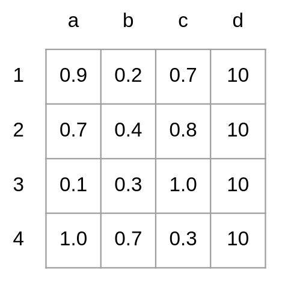
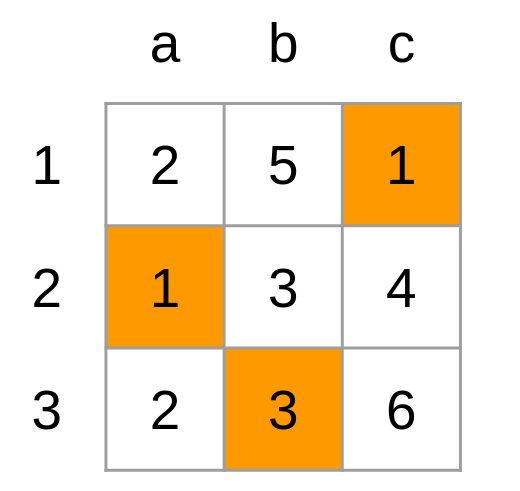
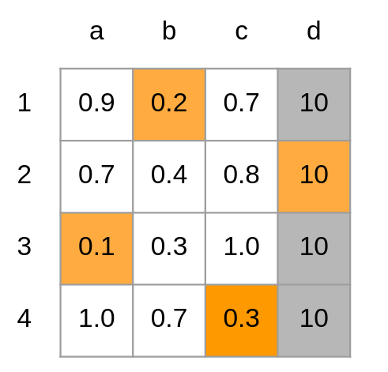
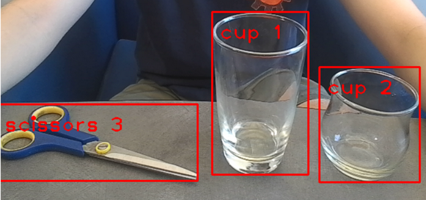

Milestone II
For our second milestone, we wanted to start implementing the 4 key
functions we plan on integrating onto the robot.
The 4 functions are the following:
Voice Classifier
Speech to Text
April Tag Navigation
Object Tracking
In the previous milestone, we were able to successfully identify 6 different objects with bounding boxes when given a frame. For our purpose, however, simply identifying objects is not sufficient. If there is only one object per category, we could simply track using the name of the object. Ex: "Navigate towards the cup." Realistically, there will be more than one object per category present in the loading area. Ex: 3 cups & 2 scissors. In this case, the command "Navigate towards the cup" won't work since the robot cannot differentiate the 3 cups apart like humans do. In order to resolve this issue, we use SORT (Simple Online Realtime Tracking).
What is SORT?
Let \(B_{detection}\) represent all the bounding boxes containing different objects that are identified by YOLO. During the feature extraction process, SORT uses the target's size and past movement from time \(t-1\) (equation 1). \((x,y)\) is the target's center, \(s\) is size, \(r\) is the height to width ratio (fixed). \(\dot{x}, \dot{y}, \dot{s}\) represent the previous movement performed by the target. SORT then uses this information to predict the target's location at time \(t\). The predictions are stored in \(B_{prediction}\).
\(b=(x,y,s,r, \dot{x}, \dot{y}, \dot{s})\) Equation 1
Then, the IOU (Intersection Over Union) of \(B_{detection}\) and \(B_{prediction}\) is calculated and converted to distance by subtracting it from 1. These distances are then stored in a matrix. If the number of boxes in \(B_{detection}\) and \(B_{prediction}\) are different, placeholder boxes are added to the smaller set to ensure both matrices are square. The placeholder boxes have a large distance value to prevent matching with real boxes. A distance matrix example is shown below.
Fig 1: Example distance matrix calculated using \(B_{detection} = [1,2,3,4]\) and \(B_{predicted} = [a,b,c]\). A placeholder box \(d\) has been added to \(B_{predicted}\) to form a square matrix.
With the distance matrix, SORT now applies the Hungarian Algorithm to find the best-matching pairs. The Hungarian Algorithm is an optimization algorithm that assigns 'tasks' to 'workers' to minimize the 'cost.' For example, when assigning tasks (a-c) to workers (1-3) given the cost matrix below (Fig 2), the pairs 1-c, 2-a, 3-b would minimize the cost.
Fig 2: Example of the Hungarian Algorithm, the highlighted cells represent the pairings that minimize the cost.
With this in mind, finding best-matching pairs using the distance matrix (Fig 1) becomes an optimization problem for assigning boxes from \(B_{predicted}\) (task) to \(B_{detected}\) (workers) to minimize the distances (cost).
Fig 3: Result of applying the Hungarian Algorithm to the distance matrix. The best-matching pairs are 1-b, 2-d, 3-a, and 4-c. Since column d was added for the sake of making the matrix square, the 2-d pairing gets thrown out.
Once SORT finishes all the steps described above, it moves onto the next frame after post-processing. During post-processing, the \(b\) values (equation 1) of each target in \(B_{predicted}\) gets updated depending on if they have been matched. For targets with a match, their \(x,y,s,r\) is replaced with those of their matching pairs, and their \(\dot{x}, \dot{y}, \dot{s}\) is updated using a Kalman Filter.For targets without a match, their \(x,y,s\) is updated by adding \(\dot{x}, \dot{y}, \dot{s}\). For boxes in \(B_{detected}\) without a match, they are considered new objects and their b values are initialized with \(\dot{x}=0, \dot{y}=0, \dot{s}=0\). The new boxes are added to \(B_{predicted}\).
Fig 4: Result of applying SORT to an image. Each object is assigned to unique IDs. This ID will be used to determine which object the robot should be navigating towards..

Fig 5. Demonstration of applying SORT on a given frame. The cup being tracked is indicated with a red dot at its center. Notice how the cup being tracked does not change.